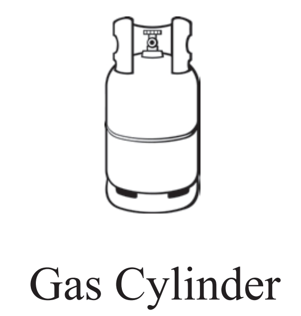
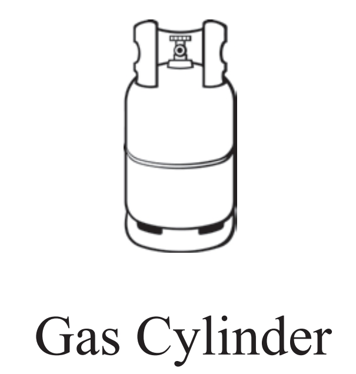

Personal Information
 

- Full Name: Ranil Wickremesinghe
- Date of Birth: March 24, 1949 (Age 75)
- Nationality: Sri Lankan
- Ethnicity: Sinhalese
- Religion: Buddhism
- Education:
- Primary and Secondary Education: Royal College, Colombo
- Bachelor of Laws (LL.B) from the University of Ceylon, Colombo
- Profession: Politician, Lawyer
- Spouse: Maithree Wickremesinghe
- Children: None
- Residency: Colombo, Sri Lanka
Political Status
- Current Position: President of Sri Lanka (Since 2022)
- Political Party: United National Party (UNP)
- Previous Positions: Prime Minister of Sri Lanka (Multiple terms)
Political Background and Career
- First entered Parliament in 1977 as a Member of Parliament (MP) for Biyagama.
- Appointed Prime Minister multiple times, with the longest tenure in Sri Lankan history.
- Leader of the United National Party (UNP) since 1994.
- Experienced in handling economic crises and constitutional reforms.
Notable Political Initiatives and Contributions
- Economic Reforms: Spearheaded several economic recovery initiatives aimed at stabilizing Sri Lanka's economy.
- Good Governance: Advocated for transparency, rule of law, and democratic reforms.
- Foreign Relations: Focused on strengthening Sri Lanka’s ties with global powers and international organizations.
- Constitutional Reforms: Played a key role in introducing several constitutional amendments to enhance governance.
2024 Presidential Election
- Presidential Candidate (2024): Running on a platform of economic recovery, political stability, and democratic reforms.
- Campaign Focus:
- Strengthening the economy through foreign investments and local reforms.
- Rebuilding Sri Lanka's international reputation.
- Constitutional reforms aimed at decentralizing power and improving governance.
- Election Symbol: The elephant, symbolizing the United National Party (UNP).
Political Achievements
- Multiple Terms as Prime Minister: Successfully managed various coalition governments.
- Economic Recovery Programs: Implemented plans to mitigate Sri Lanka’s economic crisis in 2022.
- Foreign Policy: Improved relations with countries like India, China, and the U.S.
Controversies & Criticisms
- Handling of Economic Crisis: Critics argue his policies were insufficient in addressing the economic hardships faced by Sri Lankans in 2022.
- Criticism of Leadership Style: Accused of being out of touch with the needs of ordinary citizens.
- Limited Popular Support: Despite his experience, Ranil has often struggled to garner widespread popular support.
Personal & Family Life
- Family: Married to Professor Maithree Wickremesinghe, an academic in gender studies.
- Lifestyle: Known for his reserved and formal demeanor, often seen as a technocrat rather than a populist leader.
Visual and Symbolic Representation
- Appearance: Frequently seen in formal suits, symbolizing his approach to governance as a technocrat and diplomat.
- Election Symbol: Gas Cylinder, Standing indipentent
Color and Branding
- Campaign Colors: Orange, White and Green (Representing Sri lankan flag)